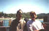
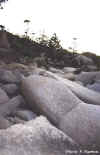
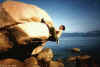
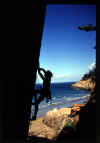
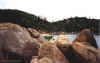
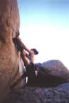
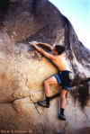
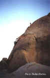

| Magnetic Island
Climbing Guide |
By Lee Skidmore, Steve
Baskerville and Doug Hockly, January
2000
Last updated 01 February, 2001
|
|

|
|
ACCESS
Magnetic Island is the island very visible off the coast of Townsville. Get there by leaving the ferry terminal near the Great Barrier Reef Aquarium. It costs $11 return to Picnic Bay (the bay closest to the mainland) for students as at 1998. Click here to see a pic of me (left) and Keith on the ferry with Picnic Bay in the background. The trip takes about 15 mins or something. When on the island, there is good
accommodation, pubs, hire mokes, and a decent bus service. Oh yeah, there are also lots of rocks.
|
 |
|
Above: Me and Keith VDB cruising
across on the ferry with Picnic Bay in the background
|
|
THE CLIMBING
Basically the climbing is on medium-large sized boulders and rock formations all around the island's many bays. There is an incredible amount of rock of the island.
In my opinion, the best thing to do is catch a bus ride to one of the beaches (bays) (will cost you a couple of bucks) and just take your shoes, chalk bag, mask & snorkel and a friend and boulder+snorkel your head off. There are some really great probs waiting to be done, and there are thousands upon thousands of boulders waiting to be climbed. Also, when you get tired, simply jump into the usually crystal water and enjoy the fringing reefs.
|
 |
 |
|
Above: Boulders, one occupied by a kookaburra
|
Above: Lee hooking away at a
problem in Picnic Bay
|
GUIDEBOOK
1) "A Climber's
Guide To Townsville and Magnetic Island - 1999" by Doug Hockly. It's a good
guide and in addition to Magnetic Island, it also covers Mt Stuart, Castle Hill,
West End Quarry, Lazy Afternoon Wall, University Wall and Kissing Point. To get
a copy of Doug's guide, email him.
Rocky Bay
Rocky bay offers a small but high quality range of traditionally protected routes. Climbing is on granite boulders, and in addition to the natural lines there are also some superb faces, none of which have been bolted. The bay hosts one of the island's nude beaches, so bring swimming gear, (or don't), and beware of inattentive belayers.
To get to Rocky bay, take the road from Picnic bay to Arcadia for about 3 or 4 km, (A taxi ride will cost just under $5), till you reach the top of the first major hill. There is a small car park and a very cool looking boulder. The track down starts near this boulder. Follow it down and you will arrive at the eastern end of the beach. Walk in the direction of Townsville for a few hundred meters and you will see a large boulder with overhung sides about 50m up to your R. This is the main area.
Routes described L to R.
Preapologised 6m 18
This first climb starts on the L-hand side of the boulder, at the upmost end of the overhung wall, and follows the
diagonal, R-leaning fist crack.
Doug Hockly 5/99
|
** Natures Finest 12m 22
10m R. The fantastic overhung hand crack. Follow it till just after it breaks L, and as soon as possible reach out R for jugs. Mantle onto the slab and move R to the flake and finish up this.
Doug Hockly 5/ 99
** Curlew 12m 23
As for above, only follow the crack L to join up with P.
Doug Hockly, Rik Wittkopp, Pete Trezona 6/ 99
7m R and just around the corner.
|
 |
|
Above: Doug Hockly leading Curlew
|
Gropefest 14m 8
Starts 1m R of the L arête of the boulder. Poorly protected friction climbing leads to a sloping ledge and a big flake. Traverse L and finish by laybacking the L-hand side of the superb flake, finishing at the best belay seat in the world.
Steve Baskerville, Jason Shaw, Doug Hockly 5/99
* Why Aren't They Naked? 14m 15
5m R. The obvious hand crack in the centre of the boulder. Follow it until it ends and traverse R along the thin horizontal break for 1.5m and then up to the ledge. Finish up the obvious corner above (minding loose rock).
Keith Van Den Broek, Steve Baskerville 4/99
Why Aren't They Naked VS 21
Start just L of original climb. Desperate thin moves up to jugs, then traverse R
to join original climb.
Steve Baskerville 29/10/00
*** Brudl 8m 26/27
15m R around the corner on the R-hand side of the block. The hardest route in the Townsville region.
Starts up the lowest finger crack, up to horizontal, a move R and up the
off-finger crack. Finish L in the corner.
Doug Hockly (pinkpoint) 5/99
The next two climbs are located in the big corner about 10m L of Gropefest.
Big Hairy Armpit 6m 9
The uninspiring corner with good pro to tree belay.
Steve Baskerville, Keith Van Den Broek 4/99
* Not Without Jase 7m 20
2m R. The perfect dihedral leading to a hand crack to finish.
Doug Hockly, Steve Baskerville, Jason Shaw 5/99
In addition to the several unclimbed lines remaining on the main boulder, the hills surrounding the bay provide plenty of opportunity for new routes. There is also unbelievable potential for bouldering in the bay.
There is also another wall with a single existing route nearby. From where the track first meets the beach, walk in the direction away from the above climbing area, and join up with a track that goes above a small sea cliff, (plenty of potential for steep hard routes here). Follow it down until you can see the backpacker resort, (Coconuts). The climb is in the middle of the wall that is facing the resort, and follows the obvious flake that stops about half height.
Mr Squiggle Goes Skinny Dipping 6m 18
Cruxy moves getting off the ground leads to some slopey horizontals, (pro?), where a few more hardish moves will see you to the top.
FTRA Keith Van Den Broek, Steve Baskerville 4/99
|
Alma Bay
Near the suburb of Arcadia. A short bus trip from where the ferry drops you off. Lots of cool rock here, some bouldering and good swimming.
A good boulder is easy to find. On the south end of the bay, on the beach, is a sloping boulder the size of a small house. It's also near a wooden pagoda-type thing and people often sunbathe near it.
|
 |
|
Above: Alma Bay
|
|
Problems listed clockwise from the
descent (closest to the shelter).
Unnamed V0
The R-hand side of the smooth
slab facing the ocean.
Reeven V5/V6
The middle of the smooth slab.
Finger tip pockets to a technical dyno.
Doug Hockly 99
Nice V0-
The nice line up the L-hand
side.
Doug Hockly 99
|
 |
|
Above: Lee doing Slap Happy
|
Slap Happy 6m V1
The obvious rising traverse line from L to R on the next side around. Start as far left as possible and slap along right on very open-grip holds. Finish by topping out on the boulder. Quite a bit harder when done barefoot.
Lee Skidmore 26/6/98
Slap Direct V1+
Starts 0.5m right of the start of SH at the two-handed undercling. Pull onto wall, slap up and left to hold, crimp, then a
balancy high step and pull up to jugs and top of boulder.
Lee Skidmore 26/6/98 |
 |
|
Above: Lee preparing for the
high-step on Slap Direct
|
Tang V3
The thin, orange diagonal with a
boulder to fall on.
Doug Hockly 99
A Little Fervour V5
Sitstart on pockets and up. Topout
straight up or pike L (V4 and probably nicer)
Doug Hockly 99
Another V0
The boulder behind you when you're
facing Slap Happy has a mono problem and a dyno from bottom jugs to the top.
Doug Hockly 99
Now up the hill.
Crimson Tide 10m 22/23
Classic thin finger-crack in largest of several rocky outcrops on hill at south end of Alma Bay beach (right side of the bay as you look out to sea).
Goes up the side facing the ocean.
FA Andrew Rule (one rest and finished
R), Mark Gommers 10/6/95
FFA Doug Hockly, Jason Shaw 10/99
Arthur Bay
Further clockwise around the island again by bus. You also have to walk 10 mins down the road to get to the beach. Good swimming and a mini route is here.
King Arthur 10m 13
Start on the right hand rocky outcrop while looking out at Arthur Bay. It's the twin crack climb. Start up the
L- hand (thinner) crack with some nice moves until it blanks out. Now step
R into the wider crack. Up this to the top and a tree belay. Escape via rap from tree.
Lee Skidmore, Keith Van Den Broek 4/10/97 |
 |
|
Above: Keith seconding the first
ascent of King Arthur
|

|
{kind=link}
{kind=link}
{kind=link}
{kind=link}
{kind=link}
{kind=link}
{kind=link}
{kind=link}